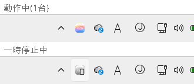
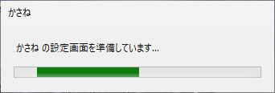
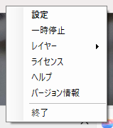
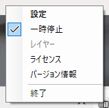
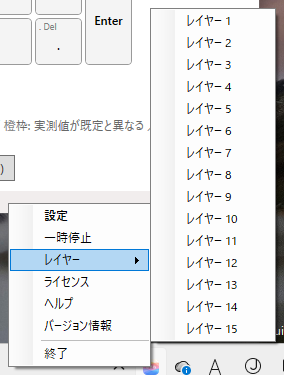

4. トレイ
トレイは、ログインすると常駐する小さなアプリです。タスクトレイ（画面右下の通知領域。隠れているときは「^」の中）に、kasane のアイコンが出ます。
トレイの役割は次のとおりです。
- エディタを開く入口になる
- すべてのキーボードのリマップを、一時的に止める
- レイヤーを手で切り替える
- IME に合わせて、レイヤーや NICOLA を自動で切り替える（10. IME連動とNICOLA）
- ヘルパー動作とアプリ別レイヤーを動かす（11. ヘルパー動作とアプリ別レイヤー）
リマップそのものは、ドライバが行います。トレイが止まっていても、設定は効き続けます（既定の設定では、トレイが動いている間だけ、キーのリマップを有効にします）。
アイコンの状態
| 状態 | アイコン |
|---|---|
| 動作中 | 通常の色 |
| 一時停止中 | 灰色に印が付く |
| ドライバに接続できない | 灰色 |

アイコンの右下には、今のレイヤーの番号が出ます（1〜9、10 以上は A〜F）。基底のレイヤー 0 だけのときは、何も出ません。表示が邪魔なときは、設定ダイアログの「全般」で外せます（13. 設定ダイアログ）。
アイコンにマウスを重ねると、状態が出ます。「かさね 1.01 - 動作中(N台)」「かさね 1.01 - 一時停止中」「かさね 1.01 - リマップ中のキーボードはありません」のいずれかです。ドライバに接続できないときは、その旨が出ます。NICOLA を設定しているときは、「NICOLA 入力中」「NICOLA 待機（IME連動）」も出ます。
左クリック
kasane（エディタ）を開きます。すでに開いているときは、前面に出ます。
初回など、起動に時間がかかるときは、画面が出るまで「かさね の設定画面を準備しています…」という小さな表示が出ます。画面が出ると、自動で消えます（最長 30 秒）。

右クリックのメニュー

| 項目 | 内容 |
|---|---|
| 設定 | kasane（エディタ）を開く |
| 一時停止 | すべてのキーボードのリマップを止めて、素通しにする。もう一度押すと再開する。チェックが付いている間が、一時停止中 |
| レイヤー | レイヤー 1〜15 を、手で有効にしたり無効にしたりする |
| ライセンス | License Manager を開く（Subscription 版のみ。Pro 版には出ません） |
| ヘルプ | ヘルプを開く。ブラウザーは、Windows の既定のブラウザーが使われる |
| バージョン情報 | バージョン、ビルド日時、Web サイト |
| 終了 | トレイを終了する |
一時停止

押すと、すべてのキーボードのリマップが止まり、アイコンが灰色になります。もう一度押すと、止める前に ON だったキーボードが ON に戻ります。リマップが効いているキーボードがないときは、押せません。
一時停止中にパソコンを再起動しても、停止したままです。トレイを起動し直して（ログインで自動起動します）、一時停止 を押すと戻ります。エディタで キーボードに適用(ON) を押しても戻ります。
レイヤー
サブメニューから、レイヤー 1〜15 を、手で有効にしたり無効にしたりします。キーを割り当てる前に試したいときに便利です。チェックが付いているレイヤーが、今有効なものです。このヘルプでは、レイヤーを有効にすることを「立てる」「入れる」、無効にすることを「切る」「下ろす」とも書きます。

- キーボードが複数あるときは、キーボードごとに分かれます。
- キーボード側の
TGや、IME連動、アプリ別レイヤーが立てたレイヤーは、チェックが付いたまま灰色になり、ここからは切れません。 - ここで入れたレイヤーは、もう一度選ぶと切れます。
- 一時停止中や、リマップが効いているキーボードがないときは、押せません。
- レイヤー 0 の項目はありません。基底のレイヤーは常に有効なので、入れたり切ったりする対象にならないためです。
DF(n)で基底をレイヤー n に替えているときは、レイヤー n の項目に、灰色のチェックが付きます。
終了
トレイを終了します。設定ダイアログの「全般」にある トレイが動いている間だけ、キーのリマップを有効にする（既定は ON）が ON のときは、リマップも OFF になります。一時停止中に終了すると、停止したままになります。
終了したあとは、スタートメニューの applet フォルダにある かさね Tray をクリックすると、起動し直せます。すでに動いているときに押しても、2 つ目は起動しません。
リモート デスクトップで接続しているとき
リモート デスクトップ（RDP）で接続したセッションでも、トレイは、実機のコンソールと同じように動きます。接続していて、画面がロックされていない間は、「操作中」として扱います。
- RDP を切断したセッションと、ロックされたセッションは、操作中ではありません。設定の「トレイが動いている間だけ、キーのリマップを有効にする」が ON のときは、このあいだ、キーボードのリマップが OFF になります。
- 再接続して、ロックを解除すると、OFF にしていたキーボードが、自動で ON に戻ります。
- RDP で接続した直後は、Windows がセッションをロックする場合があります。ロックを解除するまでは、操作中として扱われません。
すべてのキー操作が送られるとは限りません。実際に試すことをお勧めします。また、RDP 以外のリモート接続用のアプリでは、キーのリマップが動作することを保証できません。
「一時停止」と「OFF」の違い
エディタの OFF(素通しに戻す) と、トレイの 一時停止 は、どちらもリマップを止めますが、対象と戻し方が違います。
| OFF(素通しに戻す) | 一時停止 | |
|---|---|---|
| 操作する場所 | エディタ | トレイ |
| 対象 | 選んでいるキーボード | リマップが効いているすべてのキーボード |
| 戻し方 | キーボードに適用(ON) | トレイで 一時停止 をもう一度押す。キーボードに適用(ON) でも戻る |
| 設定 | ドライバに残る | ドライバに残る |
どちらも、設定は消えません。
トレイと連動したリマップ
設定ダイアログの「全般」にある トレイが動いている間だけ、キーのリマップを有効にする（既定は ON）が ON のとき、次の場面でリマップが OFF（素通し）になります。
- トレイの終了
- サインアウト、シャットダウン
- 画面のロック（ユーザーの切り替えを含む）
トレイが起動したときと、ロックを解除したときには、この仕組みで OFF にしたキーボードだけが ON に戻ります。緊急解除や OFF ボタンで止めたキーボードは、戻りません。
トレイが異常終了したとき（クラッシュ、強制終了、電源断など）や、インストーラーがトレイを止めたときは、リマップを OFF にできません。リマップを OFF のまま使いたいときは、この設定を OFF にしてください。
状態の通知
トレイは、失敗したことを、バルーン（通知）で知らせます。
自動起動と 2 種類の実行ファイル
トレイは、ログオン時に全ユーザーで自動起動します。実行ファイルは 2 種類あります。
| ファイル | 内容 |
|---|---|
kasane-tray.exe |
通常の版。ログオン時の自動起動に使います。管理者権限で動くウィンドウにも、キー入力を届けられます |
kasane-tray-nua.exe |
UI アクセスなしの版。手動で起動するための版です |
エディタは、通常の権限で開きます。キーボードへの適用などで管理者権限が必要なときは、エディタの 管理者として再起動 を使います（5. エディタの基本画面）。
管理者保護を使っているとき
Windows 11 の管理者保護が有効だと、トレイは ADMIN_ で始まるアカウント（例: ADMIN_applet）で動きます。ログオン時の起動方法は、インストーラーがインストール時の管理者保護の設定を自動で調べて、次のように切り替えます。
| 管理者保護 | 自動起動の方法 |
|---|---|
| 無効 | ログオン時の起動の登録（Run キー） |
| 有効 | タスクスケジューラのタスク kasane-tray-<ユーザー名>。Run キーは無効にされます |
Run キーのままだと、ログオンのたびに UAC の確認ダイアログが出ます。タスクにすると、確認なしで起動します。
- 管理者保護の設定が変わり、管理者保護が無効になった場合に、タスクスケジューラーからの起動をやめたいときは、上書きインストールで修復を選ぶか、アンインストールしてから再インストールしてください。自動起動の方法が、Run キーに戻ります。管理者保護を有効にしたときも同じです。
- タスクは、インストールのときにログオンしていたユーザーの分だけ作られます。別のユーザーが使うときは、そのユーザーでログオンした状態で、インストーラーをもう一度実行してください。
- 設定フォルダに書き込めないときは、トレイが通知を出します。トレイのメニューに 保存先の権限を直す... が出るので、選んでください。認証が 1 回出て、トレイと設定画面が設定フォルダに書き込めるようになります。